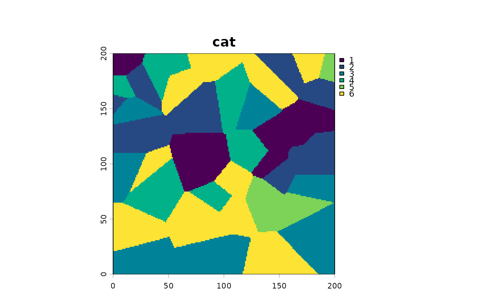

A collection of raster helpers to ease work with landscapes
Source:R/raster_helpers.R
raster_helpers.RdBesides those, you could also need terra::as.factor or terra::set.cats or terra::classify to make landscape explicitely qualitative.
Usage
raster_classes(x)
raster_nclasses(x)
raster_likely_categorical(x)
raster_range(x)
raster_ntot(x)
raster_nNA(x)
raster_anyNA(x)
raster_declareNA(x, NA_value)
raster_summary(x)
raster_resample(x, width, height, method = "near")
raster_rescale(x, new_min = 0, new_max = 255)Arguments
- x
- NA_value
which value, typically an integer (either 0 or 255) should be considered as an NA instead
- width
numeric either an integer > 1 (new width) or a proportion to downsize width
- height
numeric either an integer > 1 (new height) or a proportion to downsize height
- method
default to
near, passed to terra::resample- new_min
new min value after rescaling (default to 0)
- new_max
new max value after rescaling (default to 255)
Examples
library(terra)
# let's continue with other raster_helpers
# import an example file
landscape_quali <- simulate_voronoi(2329)
#> simulated voronoi landscape with seed 2329
landscape_quant <- simulate_continuous(2329)
#> continuous landscape with seed 2329
# minimalist and non absolute deduction based on the number of classes
# if <20, likely categorical though
raster_likely_categorical(landscape_quali)
#> [1] TRUE
raster_likely_categorical(landscape_quant)
#> [1] FALSE
# plot
landscape_quali %>% p()

landscape_quant %>% p()
 # show the number of classes (categorical)
landscape_quali %>% raster_classes()
#> [1] "1" "2" "3" "4" "5" "6"
# count the number of classes (categorical)
landscape_quali %>% raster_nclasses()
#> [1] 6
# show raster range (continuous)
landscape_quant %>% raster_range()
#> [1] -1.331971 1.255497
# a packed summary
raster_summary(landscape_quant)
#> >>> [200x200] raster (likely continous)
#> >>> with values ranging in: [-1.33197097615435, 1.25549658237243]
#> >>> 16896 NA (42.2%) among 40000 values
raster_summary(landscape_quali)
#> >>> [200x200] raster (likely categorical)
#> >>> with following (6) classes: 1, 2, 3, 4, 5, 6
#> >>> 0 NA (0%) among 40000 values
# to decrease size
# this is a good way to explore fast the big trends,
# then run the full map using MHM/CMP
if (FALSE) { # \dontrun{
# this tends to crash on my (antique) machine
# bilinear is likely better for continuous
raster_resample(landscape_quant, width=0.1, method="bilinear")
# bilinear is likely better for continuous
raster_resample(landscape_quali, width=0.1, method="near")
} # }
# show the number of classes (categorical)
landscape_quali %>% raster_classes()
#> [1] "1" "2" "3" "4" "5" "6"
# count the number of classes (categorical)
landscape_quali %>% raster_nclasses()
#> [1] 6
# show raster range (continuous)
landscape_quant %>% raster_range()
#> [1] -1.331971 1.255497
# a packed summary
raster_summary(landscape_quant)
#> >>> [200x200] raster (likely continous)
#> >>> with values ranging in: [-1.33197097615435, 1.25549658237243]
#> >>> 16896 NA (42.2%) among 40000 values
raster_summary(landscape_quali)
#> >>> [200x200] raster (likely categorical)
#> >>> with following (6) classes: 1, 2, 3, 4, 5, 6
#> >>> 0 NA (0%) among 40000 values
# to decrease size
# this is a good way to explore fast the big trends,
# then run the full map using MHM/CMP
if (FALSE) { # \dontrun{
# this tends to crash on my (antique) machine
# bilinear is likely better for continuous
raster_resample(landscape_quant, width=0.1, method="bilinear")
# bilinear is likely better for continuous
raster_resample(landscape_quali, width=0.1, method="near")
} # }